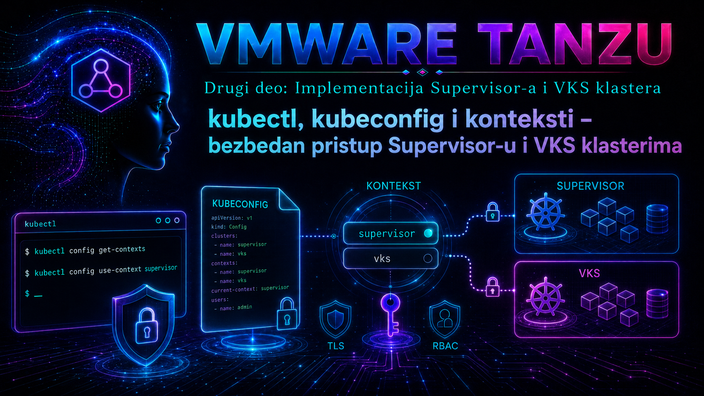

VMware & Tanzu

Prethodne lekcije definisale su Supervisor Namespace kao granicu organizacije, identiteta, kvota i odgovornosti. Ova lekcija tu granicu pretvara u svakodnevni administratorski rad: kako operator ili developer sa svoje radne stanice bezbedno dolazi do Kubernetes API-ja, kako razlikuje Supervisor od VKS klastera, kako bira pravi namespace i kako pre svake promene dokazuje da komandu upućuje pravom odredištu. Cilj nije samo „uspešan login”. Cilj je kontrolisan lanac poverenja od korisničkog identiteta, preko vCenter Single Sign-On autentikacije i kubeconfig zapisa, do Kubernetes autorizacije nad konkretnim objektom.
Terminologija zavisi od izdanja. Dokumentacija za vSphere 7 i 8 često koristi nazive Tanzu Kubernetes Grid Service, TKG Service cluster, Tanzu Kubernetes cluster ili guest cluster. U VMware Cloud Foundation 9 dokumentaciji proizvodni naziv je vSphere Kubernetes Service (VKS). U ovoj lekciji izraz VKS klaster označava workload Kubernetes klaster kojim upravlja Supervisor, a stariji nazivi se navode samo kada pomažu pri radu sa postojećim okruženjem, komandnim izlazom ili Knowledge Base člankom. Tačni dostupni parametri uvek se potvrđuju komandom kubectl vsphere login --help na verziji dodatka preuzetoj iz konkretnog vSphere/VCF okruženja.
1. Operativni model pristupa: četiri odvojene odluke
kubectl je generički Kubernetes klijent. On ne „zna” šta je vCenter niti sam pronalazi Supervisor. Za svaki zahtev čita kubeconfig, iz izabranog konteksta određuje API endpoint, identitet i podrazumevani namespace, uspostavlja TLS vezu, pribavlja ili prosleđuje akreditive, a zatim šalje zahtev Kubernetes API serveru. API server autentikuje identitet, autorizacioni sloj proverava RBAC i druge politike, a admission kontroleri po potrebi dodatno proveravaju ili menjaju objekat.
| Sloj | Pitanje koje rešava | Tipičan dokaz | Tipična greška |
|---|---|---|---|
| Mreža i TLS | Da li radna stanica bezbedno doseže pravi API endpoint? | DNS/IP ruta, TCP veza i validan lanac CA poverenja | x509, timeout, connection refused |
| Autentikacija | Ko je korisnik ili servis? | Uspešan kubectl vsphere login i svež token |
Unauthorized, istekao ili nevažeći token |
| Autorizacija | Šta identitet sme u datom klasteru i namespace-u? | kubectl auth can-i i odgovarajući RBAC binding |
Forbidden |
| Odredište | Koji klaster i namespace komanda zaista menja? | Eksplicitno potvrđeni current-context, server i namespace | Ispravna komanda izvršena nad pogrešnim klasterom |
Najopasnija greška često nije neuspešna autentikacija nego uspešna autentikacija prema pogrešnom klasteru. Zbog toga su kontekst i namespace deo bezbednosne kontrole, a ne samo pogodnost komandne linije.
2. kubectl, vSphere dodatak i kompatibilnost verzija
vSphere Plugin for kubectl dodaje podkomandu kubectl vsphere login. Dodatak se preuzima sa stranice Kubernetes CLI alata koju izlaže okruženje, odnosno putem procedure propisane za instalirano izdanje. Koristite binarne datoteke iz istog pouzdanog izvora i čuvajte ih kao kontrolisani administratorski alat. Ne preuzimajte nasumičan kubectl-vsphere sa javnog repozitorijuma i ne pretpostavljajte da dodatak iz jednog vCenter/Supervisor okruženja odgovara drugom.
Verzija običnog kubectl treba da bude kompatibilna sa Kubernetes minor verzijom ciljnog klastera; upstream projekat uobičajeno podržava odstupanje najviše jedne minor verzije klijenta u odnosu na kube-apiserver. VKS lifecycle može dovesti do toga da Supervisor i pojedini VKS klasteri ne koriste istu Kubernetes verziju, pa se kompatibilnost proverava za svako odredište, a ne samo jednom na jump host-u.
# Read-only: verzije klijenta, dodatka i servera dostupnog kroz aktivni kontekst
kubectl version --client
kubectl vsphere version
kubectl version
# Read-only: stvarno podržani parametri instaliranog dodatka
kubectl vsphere login --help
Ako kubectl vsphere version nije podržan u konkretnoj generaciji dodatka, pomoć i metapodaci binarne datoteke proveravaju se prema dokumentaciji tog izdanja. Sama činjenica da plugin može da se pokrene ne dokazuje da je kompatibilan sa trenutnim Supervisor-om.
3. Kubeconfig nije samo spisak klastera
Kubeconfig je YAML konfiguracija koja povezuje tri imenovana skupa: clusters sadrži API endpoint i podatke za proveru serverskog sertifikata; users sadrži ili poziva mehanizam pribavljanja korisničkih akreditiva; contexts povezuje jedan cluster, jednog user-a i opcioni podrazumevani namespace. Polje current-context bira aktivnu vezu. Naziv zapisa nije bezbednosni dokaz: kontekst nazvan prod može pokazivati na laboratorijski server ili obrnuto, zato se proverava sadržaj.
apiVersion: v1
kind: Config
clusters:
- name: supervisor-prod
cluster:
server: https://SUPERVISOR-CONTROL-PLANE-FQDN-ILI-IP:6443
certificate-authority-data: BASE64_CA_PODACI
users:
- name: korisnik@example.local
user:
token: REDIGOVANO
contexts:
- name: supervisor-prod-ns-platforma
context:
cluster: supervisor-prod
user: korisnik@example.local
namespace: platforma
current-context: supervisor-prod-ns-platforma
Primer prikazuje logiku, ne šablon za ručno pravljenje vSphere kubeconfig-a. Login dodatak generiše zapise potrebne konkretnom okruženju. Kubeconfig može sadržati bearer tokene, klijentske ključeve, sertifikate ili exec instrukcije koje pokreću spoljašnji program. Zbog toga je kubeconfig tajna i potencijalno izvršiva konfiguracija. Upstream Kubernetes izričito upozorava da posebno pripremljen nepoverljiv kubeconfig može izazvati izvršavanje koda ili izlaganje lokalnih datoteka. Ne spajajte niti otvarajte tuđ kubeconfig pre ručne inspekcije polja exec, command, args, putanja do sertifikata i endpoint-a.
# Read-only prikaz bez otkrivanja tajni u uobičajenom izlazu
kubectl config view
# Read-only: eksplicitno prikaži samo trenutno odredište
kubectl config current-context
kubectl config view --minify -o jsonpath='{.clusters[0].cluster.server}{"\n"}'
kubectl config view --minify -o jsonpath='{..namespace}{"\n"}'
# OPREZ: --raw može prikazati tokene, sertifikate i ključeve.
# Koristiti samo lokalno, bez terminalskog snimanja i bez lepljenja u tiket.
kubectl config view --raw4. Lokacija, dozvole i razdvajanje kubeconfig fajlova
Podrazumevana lokacija je $HOME/.kube/config. Drugi fajl se bira parametrom --kubeconfig ili promenljivom KUBECONFIG. Kada KUBECONFIG sadrži više putanja, kubectl ih spaja prema pravilima učitavanja; kolizije imena mogu dati neočekivani rezultat. U produkciji je često bezbednije razdvojiti okruženja u zasebne fajlove i u administratorskim skriptama koristiti eksplicitni --kubeconfig nego trajno spajati sve klastere u jedan veliki fajl.
# State-changing samo nad lokalnim dozvolama; bezbedna preporuka za Linux/macOS
install -d -m 700 "$HOME/.kube"
chmod 600 "$HOME/.kube/config"
# Privremeni, eksplicitni izbor za jednu shell sesiju
export KUBECONFIG="$HOME/.kube/vsphere-lab.yaml"
# Još jasnije za automatizaciju: bez oslanjanja na current-context drugog fajla
kubectl --kubeconfig "$HOME/.kube/vsphere-prod.yaml" config current-contextNe postavljajte kubeconfig u Git, wiki, zajednički chat, nešifrovani backup ili artefakt CI posla. Na Windows radnoj stanici primenite NTFS ACL tako da fajl može čitati samo odgovarajući korisnički nalog i administratori. Na deljenom jump host-u svaki administrator mora imati svoj OS nalog, sopstveni kubeconfig i sledljiv identitet; zajednički nalog uništava audit trag.
5. Bezbedan SSO login na Supervisor
Pre login-a moraju biti zadovoljeni mrežni preduslovi: klijentska stanica doseže Supervisor Kubernetes control plane adresu i vCenter/identity endpoint-e koje zahteva izabrani tok; DNS vraća očekivanu adresu; vreme klijenta, vCenter-a i control plane-a je sinhronizovano; CA lanac je pouzdan. Korisnik mora imati dodeljen pristup vSphere Namespace-u. Uspešna vCenter autentikacija bez namespace dozvole ne daje automatski Kubernetes ovlašćenja.
# State-changing: upisuje ili ažurira zapise u izabranom kubeconfig fajlu.
# Lozinka se unosi interaktivno; ne stavljati je u istoriju shell-a.
kubectl vsphere login \
--server="SUPERVISOR-CONTROL-PLANE-FQDN-ILI-IP" \
--vsphere-username="korisnik@example.local"
# Read-only validacija nakon login-a
kubectl config get-contexts
kubectl config current-context
kubectl cluster-info
kubectl auth whoami
Sintaksa može koristiti adresu ili URL, zavisno od verzije dodatka; merodavan je --help iz konkretnog paketa. kubectl auth whoami zahteva da server podržava odgovarajući SelfSubjectReview API. Ako nije dostupan, identitet i prava proveravaju se kroz kubectl auth can-i. Opciju za preskakanje TLS provere nemojte pretvarati u trajno rešenje. Ona može biti korisna samo kao kratka laboratorijska dijagnostika da se razdvoji problem poverenja od problema mreže, ali otvara prostor za man-in-the-middle napad. Produkcijska korekcija je instaliranje odgovarajućeg CA lanca i izdavanje sertifikata čiji SAN odgovara adresi kojom se klijent povezuje.
6. Login na VKS klaster i izbor konteksta
VKS login se inicira preko Supervisor endpoint-a, uz ime workload klastera i njegov Supervisor Namespace. Plugin zatim pribavlja podatke potrebne za pristup ciljanom VKS API-ju i upisuje odgovarajući kontekst. Korisnik mora imati pravo pristupa i mrežnu putanju do VKS control plane endpoint-a. Generički oblik komande je sledeći; nazivi parametara i podrška razlikuju se između generacija, zato se pre izvršenja potvrđuju lokalnom pomoći.
# State-changing: ažurira lokalni kubeconfig; ne menja klaster.
kubectl vsphere login \
--server="SUPERVISOR-CONTROL-PLANE-FQDN-ILI-IP" \
--vsphere-username="korisnik@example.local" \
--tanzu-kubernetes-cluster-name="vks-dev-01" \
--tanzu-kubernetes-cluster-namespace="tim-dev"
# Odmah pregledati i eksplicitno izabrati kontekst koji je dodatak kreirao.
kubectl config get-contexts
kubectl config use-context "IME-KONTEKSTA-IZ-PRETHODNOG-IZLAZA"
kubectl cluster-info
kubectl get nodes
Parametri sa prefiksom tanzu-kubernetes-cluster-* istorijski su zadržani u mnogim vSphere 7/8 okruženjima i mogu se pojaviti i kada se poslovno koristi naziv VKS. Nemojte preimenovanje proizvoda pretvoriti u nagađanje CLI sintakse. Takođe ne pretpostavljajte da je kontekst automatski promenjen na željeni cilj: pročitajte izlaz dodatka i proverite ga dokazima.
7. Upravljanje kontekstima bez operativnih iznenađenja
# Sve komande u prvom bloku čitaju lokalnu konfiguraciju
kubectl config get-contexts
kubectl config get-contexts -o name
kubectl config current-context
# State-changing: menja samo lokalni current-context
kubectl config use-context "vks-dev-01"
# State-changing: pravi novo lokalno ime, bez promene klastera
kubectl config rename-context "staro-ime" "prod-supervisor-ns-platforma"
# State-changing: postavlja podrazumevani namespace u lokalnom kontekstu
kubectl config set-context --current --namespace="platforma"
# Read-only pre-flight kontrola neposredno pre izmene resursa
kubectl config view --minify
kubectl auth can-i create deployments.apps --namespace="platforma"
Dobra konvencija imena sadrži najmanje okruženje, tip klastera i, kada je korisno, namespace: na primer prod-supervisor-platforma ili dev-vks-aplikacije. Ime olakšava prepoznavanje, ali ne zamenjuje proveru serverskog URL-a. Za rizične promene koristite eksplicitne parametre --context i --namespace; time komanda postaje čitljivija u change zapisu i manje zavisi od nevidljivog lokalnog stanja.
# Read-only primer sa eksplicitnim odredištem
kubectl --context="prod-vks-01" --namespace="aplikacije" get deployments
# Server-side simulacija zahteva; ne kreira objekat, ali prolazi autorizaciju/admission.
kubectl --context="prod-vks-01" --namespace="aplikacije" \
apply --server-side --dry-run=server -f deployment.yaml
# Tek posle pregleda diff-a i odobrenja promene: MENJA stanje klastera
kubectl --context="prod-vks-01" --namespace="aplikacije" diff -f deployment.yaml
kubectl --context="prod-vks-01" --namespace="aplikacije" apply -f deployment.yaml
kubectl diff je read-oriented kontrola, ali može kontaktirati admission komponente i u zavisnosti od servera zahtevati prava slična promeni; ne tretira se kao potpuno „offline” pregled. Za kritične produkcione promene kontekst i namespace treba da budu parametri automatizacije, a ne ručni implicitni izbor.
8. Autentikacija nije autorizacija: dokazivanje efektivnih prava
# Read-only SelfSubjectAccessReview provere
kubectl auth can-i get pods --namespace="tim-dev"
kubectl auth can-i create deployments.apps --namespace="tim-dev"
kubectl auth can-i delete namespaces
kubectl auth can-i --list --namespace="tim-dev"
# Administrator može proveriti drugog subjekta samo ako ima pravo impersonacije.
kubectl auth can-i create pods \
--namespace="tim-dev" \
--as="korisnik@example.local"
yes dokazuje da autorizacioni sloj trenutno dozvoljava navedenu radnju; ne dokazuje da će admission politika prihvatiti konkretan manifest. no uz uspešan login obično znači problem dodele prava, pogrešan namespace ili pogrešan klaster, a ne problem lozinke. Opcija --as nije način da korisnik sam sebi proširi prava: API server mora mu izričito dozvoliti impersonaciju, a korišćenje treba da bude auditovano.
9. SSO pristup naspram kubernetes-admin kubeconfig-a
| Model | Namena | Prednost | Rizik i kontrola |
|---|---|---|---|
| vCenter SSO korisnik/grupa | Redovan rad administratora, operatora i developera | Lični identitet, RBAC, opoziv kroz identitetni sistem i bolji audit | Traži ispravnu integraciju identiteta, vremena, sertifikata i namespace dozvola |
kubernetes-admin secret/kubeconfig |
Break-glass, duboki troubleshooting i oporavak VKS control plane-a | Nezavisan hitni administratorski pristup | Vrlo visoke privilegije; strogo čuvanje, vremenski ograničena upotreba, evidencija i rotacija |
| ServiceAccount/OIDC ili podržan workload identitet | Automatizacija bez interaktivnog ljudskog login-a | Najmanje privilegije i namenski identitet | Ne praviti „večan admin token”; kontrolisati rok, audience, skladištenje i opoziv |
VKS administrativni kubeconfig može se dobiti iz odgovarajućeg secreta prema proceduri i imenovanju koje važi za instalirano izdanje. To nije zamena za svakodnevni SSO. Ne kopira se na developerske računare, ne deli između administratora i ne ugrađuje u CI. Ako je izvučen zbog incidenta, evidentirajte ko ga je koristio, gde je privremeno sačuvan, kada je uklonjen i da li je potrebna rotacija. Direktan SSH pristup Supervisor control plane VM-u i korišćenje /etc/kubernetes/admin.conf pripada samo vendor-dokumentovanom troubleshooting/recovery toku, jer pogrešna promena može ugroziti upravljanu platformu i podršku.
10. Sertifikati, tokeni i vreme
TLS sertifikat dokazuje identitet endpoint-a i štiti saobraćaj; autentikacioni token dokazuje sesiju korisnika. To su različiti kvarovi. Greška x509: certificate signed by unknown authority upućuje na CA lanac, dok certificate is valid for ... not ... ukazuje na pogrešno ime/adresu ili SAN. Unauthorized posle ranije uspešnog rada često ukazuje na istekao token, nesinhronizovano vreme ili promenu javnih ključeva/sertifikata u vCenter/Supervisor/VKS lancu. Ponovni login je razuman prvi bezbedan korak, ali ponavljano privremeno rešavanje nije analiza osnovnog uzroka.
# Read-only: proverava sertifikat koji endpoint stvarno prezentuje.
# -servername mora odgovarati DNS imenu kojim se klijent povezuje.
openssl s_client \
-connect SUPERVISOR-FQDN:6443 \
-servername SUPERVISOR-FQDN \
-showcerts </dev/null
# Read-only: vreme i DNS na Linux administratorskoj stanici
date --iso-8601=seconds
getent hosts SUPERVISOR-FQDN
Izlaz openssl proverava se za subject/SAN, issuer, rok važenja i završni Verify return code. Ne kopirajte privatne ključeve sa platforme radi „popravke” klijentskog poverenja. CA sertifikat distribuirajte kroz odobreni enterprise trust store ili podržanu konfiguraciju plugin-a. Sertifikati Supervisor-a obuhvataju više trust domena i komponenti; obnova se sprovodi Broadcom procedurom za tačnu verziju, a ne improvizovanim brisanjem secreta iz slučajnog KB članka namenjenog drugom izdanju.
11. Troubleshooting matrica: od simptoma do osnovnog uzroka
| Simptom | Prve neinvazivne provere | Verovatni sloj | Trajna korekcija |
|---|---|---|---|
| Timeout ili nema rute | Endpoint iz konteksta, DNS, ruta, firewall, load balancer/VIP | Mreža | Ispraviti DNS/rutiranje/ACL prema dokumentovanim portovima; ne zaobilaziti pristupom na control plane VM |
x509 greška |
FQDN, SAN, issuer, CA u kubeconfig-u, rok važenja | TLS poverenje | Ispravan sertifikat i CA distribucija; ukloniti trajni insecure režim |
Unauthorized |
Ponovni login, vreme, izabrani user/context, nedavne obnove vCenter sertifikata | Autentikacija/token | Obnoviti poverenje ili sinhronizaciju ključeva prema KB-u za tačnu verziju |
Forbidden |
auth can-i, namespace, SSO grupa i RBAC binding |
Autorizacija | Dodeliti najmanji potreban nivo prava kroz grupu i dokumentovan proces |
| Login uspe, VKS API nije dostupan | VKS endpoint u kontekstu, mrežna dostupnost, stanje control plane-a | VKS mreža ili zdravlje | Ispraviti putanju/load balancer ili oporaviti klaster po podržanom toku |
| Komanda radi nad pogrešnim objektima | current-context, server, namespace i eksplicitni parametri | Lokalna konfiguracija | Razdvojiti fajlove, standardizovati imena i uvesti pre-flight kontrolu |
Dijagnostika se vodi redom: zabeležite simptom, vreme i obim; sačuvajte redigovani izlaz verzija, konteksta i endpoint-a; proverite poslednje promene u sertifikatima, identitetu, DNS-u, firewall-u i lifecycle-u klastera; formirajte hipotezu; zatim tek menjajte stanje. Klijentski detalji mogu se dobiti povećanjem verbosity nivoa, ali izlaz može sadržati osetljive zaglavlja i podatke, pa se pre prilaganja tiketu rediguje.
# Read-only, ali izlaz tretirati kao poverljiv i redigovati pre deljenja
kubectl --v=6 get namespaces
# Read-only snapshot bez prikazivanja raw tajni
kubectl version
kubectl config current-context
kubectl config view --minify
kubectl auth can-i --list --namespace="tim-dev"
kubectl get events --namespace="tim-dev" --sort-by='.metadata.creationTimestamp'Za korelaciju koristite vCenter događaje i zadatke, Supervisor status i alarme, Kubernetes događaje, API audit zapise ako su dostupni kroz podržani model, kao i Broadcom support bundle. Log lokacije i način prikupljanja razlikuju se po verziji; ne uključujte SSH na upravljane control plane VM-ove kao rutinski prvi korak. Support bundle se prikuplja tek nakon očuvanja klijentskih dokaza i prema proceduri za konkretan vSphere/VCF release.
12. Praktikum – kontrolisan pristup od Supervisor-a do VKS klastera
Cilj i kontekst. Platform tim priprema Linux jump host za operatora koji sme da čita objekte u Supervisor Namespace-u tim-dev i da upravlja aplikacijama u VKS klasteru vks-dev-01, ali ne sme da administrira druge namespace-e. Vežba uspostavlja SSO pristup, proverava efektivna prava, simulira tri realne greške i završava kontrolisanim čišćenjem lokalnih akreditiva.
Topologija i preduslovi. Potrebni su Supervisor sa zdravim control plane endpoint-om, postojeći namespace tim-dev, postojeći VKS klaster vks-dev-01, vCenter SSO korisnik dodeljen odgovarajućoj grupi i pravilima, DNS/NTP i mrežna dostupnost oba API endpoint-a. Na jump host-u moraju biti odobrene kompatibilne verzije kubectl i kubectl-vsphere. Korisnik ne dobija cluster-admin niti pristup control plane VM-ovima.
Rizik. Login menja lokalni kubeconfig, a kasnije testiranje može promeniti objekte ako se izostavi --dry-run=server. Pre rada pravi se zaštićena kopija lokalne konfiguracije. Lozinka i sirovi kubeconfig ne snimaju se u zapis sesije. Sve klasterske provere do posebno označenog koraka su read-only.
Vežba 1 – priprema i inventar alata
set -o errexit -o nounset -o pipefail
LAB_KUBECONFIG="$HOME/.kube/vsphere-lesson20.yaml"
install -d -m 700 "$HOME/.kube"
# Ako fajl postoji, pravi se vremenski označena kopija; ne prepisuje se naslepo.
if [ -f "$LAB_KUBECONFIG" ]; then
cp -p "$LAB_KUBECONFIG" "${LAB_KUBECONFIG}.backup.$(date +%Y%m%d%H%M%S)"
fi
touch "$LAB_KUBECONFIG"
chmod 600 "$LAB_KUBECONFIG"
export KUBECONFIG="$LAB_KUBECONFIG"
kubectl version --client
kubectl vsphere login --help
kubectl config get-contexts
Očekivani rezultat i validacija. Obe binarne datoteke se izvršavaju, pomoć prikazuje login parametre, a laboratorijski kubeconfig ima dozvole 600. Ako shell prijavi da kubectl-vsphere nije pronađen, proverite da li je dodatak izvršiv, u direktorijumu navedenom u PATH i preuzet iz pravog okruženja. Ne rešavajte problem pokretanjem nepoznate binarne datoteke kao root.
Vežba 2 – Supervisor login, identitet i najmanje privilegije
kubectl vsphere login \
--server="SUPERVISOR-CONTROL-PLANE-FQDN-ILI-IP" \
--vsphere-username="operator@example.local"
kubectl config get-contexts
kubectl config current-context
kubectl config view --minify -o jsonpath='{.clusters[0].cluster.server}{"\n"}'
kubectl cluster-info
kubectl auth can-i get namespaces
kubectl auth can-i get pods --namespace="tim-dev"
kubectl auth can-i delete namespaces
Kriterijum uspeha. Server odgovara očekivanom Supervisor endpoint-u, operator može da obavlja tačno odobrene read operacije u tim-dev, a privilegovana provera vraća no. Ako login uspe, ali get pods vrati Forbidden, ne ponavljajte lozinku: proverite namespace, članstvo korisnika u SSO grupi i mapiranje prava iz prethodnih lekcija. Promenu prava izvodi ovlašćeni platform administrator i ponovo dokazuje sa auth can-i.
Vežba 3 – VKS login i pre-flight kontrola
kubectl vsphere login \
--server="SUPERVISOR-CONTROL-PLANE-FQDN-ILI-IP" \
--vsphere-username="operator@example.local" \
--tanzu-kubernetes-cluster-name="vks-dev-01" \
--tanzu-kubernetes-cluster-namespace="tim-dev"
kubectl config get-contexts
# Zameniti stvarnim imenom koje je plugin prikazao.
VKS_CONTEXT="STVARNO-IME-VKS-KONTEKSTA"
kubectl config use-context "$VKS_CONTEXT"
kubectl config set-context --current --namespace="aplikacije"
kubectl config current-context
kubectl config view --minify -o jsonpath='{.clusters[0].cluster.server}{"\n"}'
kubectl config view --minify -o jsonpath='{..namespace}{"\n"}'
kubectl get nodes
kubectl auth can-i create deployments.apps --namespace="aplikacije"
Očekivani rezultat. Endpoint pripada VKS klasteru, čvorovi su vidljivi u skladu sa RBAC pravilima, a podrazumevani namespace je aplikacije. Ako autentikacija uspe, ali je VKS endpoint nedostupan, uporedite server iz kubeconfig-a sa DNS-om i mrežnom putanjom jump host-a. Nemojte menjati endpoint ručno dok ne utvrdite da je zapis pogrešan; ručna zamena može zaobići podržani tok i izazvati SAN grešku.
Vežba 4 – bezbedna simulacija promene
apiVersion: apps/v1
kind: Deployment
metadata:
name: lesson20-check
namespace: aplikacije
spec:
replicas: 1
selector:
matchLabels:
app: lesson20-check
template:
metadata:
labels:
app: lesson20-check
spec:
containers:
- name: web
image: nginx:stable
resources:
requests:
cpu: 50m
memory: 64Mi
limits:
cpu: 100m
memory: 128Mi# Sačuvati manifest kao lesson20-check.yaml, pa prvo izvršiti server-side simulaciju.
kubectl --context="$VKS_CONTEXT" --namespace="aplikacije" \
apply --server-side --dry-run=server -f lesson20-check.yaml
# Read-oriented pregled razlike; ne primenjivati objekat bez odobrenja instruktora.
kubectl --context="$VKS_CONTEXT" --namespace="aplikacije" \
diff -f lesson20-check.yaml
Kriterijum uspeha. Server potvrđuje manifest bez kreiranja Deployment-a; kubectl get deployment lesson20-check vraća NotFound. Time su provereni endpoint, autentikacija, autorizacija, admission i schema bez trajne promene. Ako dry-run vrati Forbidden, koriguje se RBAC. Ako admission odbije image, resurse ili politiku, manifest se usklađuje sa politikom; bezbednosna kontrola se ne isključuje radi prolaska vežbe.
Vežba 5 – incident drill: pogrešan kontekst, TLS i istekao token
- Pogrešan kontekst: bez slanja state-changing komande izaberite drugi laboratorijski kontekst, pokrenite pre-flight proveru i utvrdite razliku u serveru/namespace-u. Korekcija je
use-contextili eksplicitni--context; trajna mera je standard imena i obavezna kontrola u change proceduri. - TLS simptom: ne uključujte trajni insecure režim. Prikupite
openssl s_clientizlaz, proverite FQDN/SAN/issuer/rok i uporedite CA iz odobrenog izvora. Privremeni workaround nije prihvatljiv završetak vežbe. - Unauthorized: zabeležite vreme, current-context i nedavne promene sertifikata; ponovite SSO login. Ako se problem vraća, eskalirajte sa redigovanim dokazima i korelacijom vCenter/Supervisor/VKS događaja. Trajna mera rešava sinhronizaciju ključeva, sertifikat ili vreme prema verzijski odgovarajućoj Broadcom proceduri.
Za svaki incident zapis mora razlikovati simptom i obim, neposredni uzrok, osnovni uzrok, privremeno zaobilazno rešenje i trajnu korekciju. Vežba je završena tek kada ponovljene read-only provere potvrde očekivani identitet, endpoint, namespace i prava.
Vežba 6 – rollback i čišćenje laboratorije
# Prvo dokazati da Deployment nije nastao tokom dry-run vežbe.
kubectl --context="$VKS_CONTEXT" --namespace="aplikacije" \
get deployment lesson20-check
# Uklanja lokalne zapise samo iz laboratorijskog fajla; ne menja klaster.
kubectl config get-contexts
kubectl config delete-context "$VKS_CONTEXT"
# Pre uklanjanja user/cluster zapisa proveriti da ih ne koristi drugi kontekst.
kubectl config get-contexts
chmod 600 "$LAB_KUBECONFIG"
Ako je manifest greškom stvarno primenjen, brisanje je state-changing i dozvoljeno je samo u laboratoriji posle potvrde tačnog konteksta i namespace-a: kubectl --context="$VKS_CONTEXT" --namespace="aplikacije" delete -f lesson20-check.yaml. Oporavak se validira proverom da objekat više ne postoji i pregledom događaja. Brisanje celog kubeconfig fajla nije automatski najbolji rollback ako sadrži druge potrebne kontekste; tada se vraća prethodna zaštićena kopija ili se ciljano uklanjaju samo zapisi nastali u vežbi.
13. Administratorske prakse
- Koristite lične SSO identitete i grupno upravljan RBAC; zajednički administratorski nalozi nisu prihvatljiva redovna praksa.
- Razdvojite produkcijske i laboratorijske kubeconfig fajlove i u automatizaciji eksplicitno navedite
--kubeconfig,--contexti--namespace. - Pre svake promene proverite current-context, stvarni API server, namespace, identitet i
auth can-i; za manifest koristite server-side dry-run i diff. - Kubeconfig klasifikujte kao tajnu: najmanje OS dozvole, enkripcija uređaja i backup-a, bez Git-a, tiketa i chat-a; sirovi prikaz redigujte.
- Ne prihvatajte nepoverljiv kubeconfig bez inspekcije
execi putanja. Potpis i poreklo plugin binarnih datoteka moraju biti kontrolisani. - Ne koristite
--insecure-skip-tls-verifykao trajnu konfiguraciju. Ispravite CA lanac, SAN i distribuciju poverenja. kubernetes-adminčuvajte kao break-glass mehanizam sa kontrolom pristupa, evidencijom, privremenim preuzimanjem i procedurom rotacije.- Posle lifecycle ili certificate promene testirajte login i read-only pristup i Supervisor-u i reprezentativnim VKS klasterima, jer uspeh na jednom endpoint-u ne dokazuje drugi.
- Za automatizaciju koristite namenski podržan identitet sa najmanjim privilegijama i vremenski ograničenim akreditivima; ne automatizujte interaktivni SSO tako što ćete lozinku staviti u skriptu.
- U incidentu prvo čuvajte dokaze i korelišite vreme, vCenter događaje, Supervisor/VKS stanje i klijentski verbose izlaz; tek zatim menjajte sertifikate, RBAC ili kubeconfig.
14. Završna kontrolna tačka
Administrator je spreman za narednu lekciju kada može dokazivo da:
- objasni put zahteva od kubeconfig konteksta do TLS-a, autentikacije, RBAC autorizacije i admission kontrole;
- instalira i verzijski proveri
kubectli vSphere plugin iz pouzdanog izvora; - izvede SSO login na Supervisor i VKS klaster bez izlaganja lozinke ili trajnog preskakanja TLS provere;
- pročita i bezbedno organizuje cluster, user i context zapise, uz eksplicitni namespace i zaštićene dozvole fajla;
- pre state-changing komande potvrdi tačan kontekst, endpoint, namespace, identitet i efektivno pravo;
- razlikuje
UnauthorizedodForbidden, kao i mrežni kvar od TLS kvara; - sprovede dijagnostiku od najmanje invazivne provere do verzijski odgovarajućeg support/recovery toka;
- objasni zašto je SSO standardni pristup, a
kubernetes-adminkontrolisani break-glass mehanizam; - bezbedno simulira manifest pomoću server-side dry-run-a, validira rezultat i očisti samo laboratorijske zapise.
Zaključak
Bezbedan rad sa Supervisor-om i VKS klasterima počinje pre prve Kubernetes komande. Administrator mora da zna koju binarnu datoteku koristi, kome veruje, koji identitet predstavlja, kom API serveru se obraća, u kom namespace-u radi i šta mu je zaista dozvoljeno. Kubeconfig i kontekst povezuju sve te odluke, pa njihova pogrešna upotreba može biti jednako opasna kao pogrešan manifest. Lični SSO identitet, validan TLS lanac, najmanje privilegije, eksplicitno odredište, pre-flight provera i dokaziva dijagnostika čine osnovu odgovornog rada. Sa tim kontrolama čitalac je spreman da u narednoj lekciji kreira prvi VKS klaster bez mešanja pristupnog modela sa lifecycle i workload konfiguracijom samog klastera.